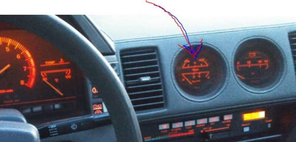

-
Hi,
I have noticed strange behavior of oil pressure and temperature gauge. (it is non turbo version, z31 '84)
when staring cold engine, oil pressure goes up a bit slowly but reaches a stable about 3,5 value…
after about 10 minutes ride around oil temperature goes to the end of scale (over 150 deg), so the arrow is out of scale…
oil pressure then drops to about 2 on the scale which would correspond to higher oil temperature I guess.
question is what could be the reason for oil overheating? Oil is new, previous owner changed it before sale…
please suggest some solutions?
thanks a lot
M -
You do not have an oil temperature gauge. That's coolant temperature. Your motor is overheating. -
well I think I have… on the right side ..

engine coolant temp gauge is on the left side of the picture. this is picture of my dashboard. -
Could be bad sensors. You can use an OHM meter to check them. Temp Sensor should read between 10-80 ohms on a warm engine (Positive lead on sensor wire, Negative grounded. Oil Pressure Sensor Terminal 1 to positive lead & Neg lead grounded should read 0 ohm with engine off and open with engine running (idle), Terminal 2 to pos lead & neg lead grounded should read more than 74 ohm with engine off & less than 60 ohm with engine running (idle). That's from my U.S. 87 Service Manual, your values maybe different.
I haven't seen a non-turbo with the temp/pressure gauge setup like that in the states, usually just the turbos have them, pretty neat. What country is your Z from?Last edited by Dunkine; 08-07-2017, 01:52 PM. -
I stand corrected! I've never seen that on an NA either! -
ok I will try to check the sensors. mine is euro version, it came from Germany. but I do not know the full story . -
All Euro Z31s (also NA) have oil coolers, just in case you weren't aware of that.
If you want to check the sensor, refer to the FSMs http://www.xenonzcar.com/z31/reference.htmlLast edited by kaur; 08-08-2017, 02:33 AM.

Copyright © 2006–. All rights reserved. Privacy Policy